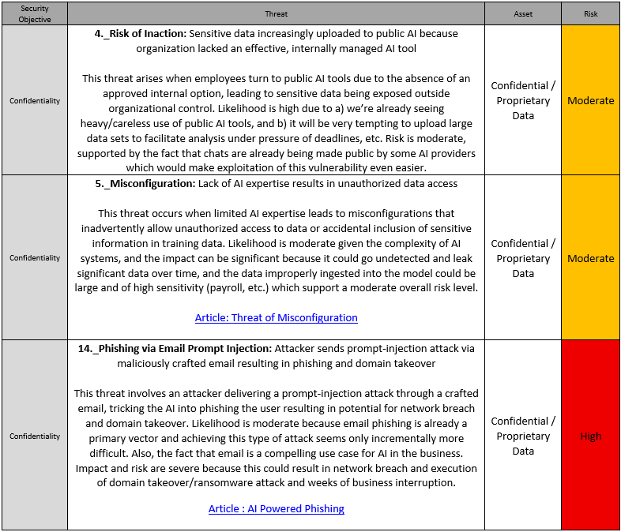
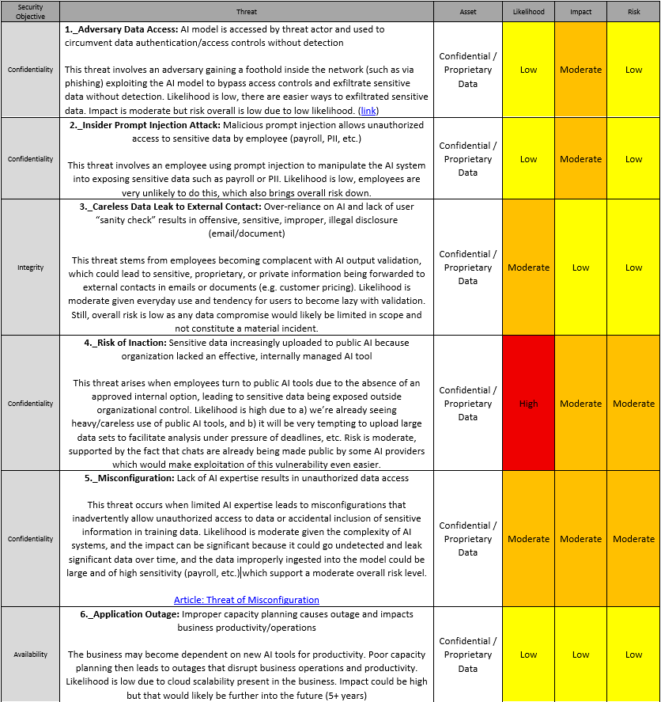
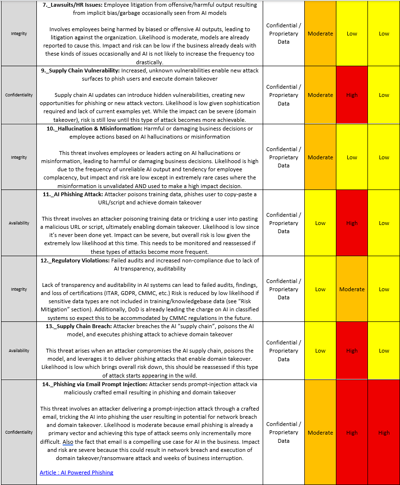

Understanding Risks Associated with Introduction of Private GenAI Tools in the Business
Introduction
Organizations are eager to gain competitive advantage from AI tools, driven by promises of efficiency, automation, and new business insights from data. AI is increasingly seen as a way of reducing costs, accelerating decision-making, improving customer experience, and unlocking new revenue streams. This creates strong incentives to deploy AI quickly, often ahead of establishing mature security practices.
Generative AI introduces new, unpredictable risks to businesses, particularly those on the “bleeding edge” of AI adoption. News stories are slowly increasing of sensitive data leaks, intellectual property loss, and legal exposure from offensive or harmful AI output. Meanwhile, the risks from unsanctioned use of public chatbots, “Shadow AI” are already here and will only get worse if the business fails to provide managed AI tools to discourage use of uncontrolled applications.
Rapid deployment of enterprise AI comes with its own risks. Therefore, an incremental approach, starting with isolated AI tools with limited access to data is strongly encouraged, and is the primary focus of this assessment.
Scope
This assessment explores private AI models restricted to internal employees and strictly controlled data access. It considers relatively safe uses like email, document processing, and knowledgebase queries while avoiding the higher risks of public or autonomous AI.
- AI “assistant” built into Office applications to help draft documents or emails or generate formulas in Excel (i.e. Microsoft Copilot).
- AI-Powered Search & Summarization: Private AI chatbot connected to internal knowledgebases such as customer history, QMS and SOP document libraries, IT support knowledgebase, or HR information libraries. ChatGPT Enterprise and Microsoft Copilot Studio are popular examples. (RAG AI)
- Scheduling, Notes, and Transcription: Tools like MS Teams transcription offers efficiencies in notetaking, capturing action items, and searching meeting conversations.
- Other use cases where public access or sensitive data is not required to make use of the model.
- AI restricted from taking actions or committing changes (always a “human in the loop”)
- Use of unmanaged, publicly available AI models (“Shadow AI”)
- Private AI models with unrestricted access to the internet, network, or data
- External threats from attackers using “AI enhanced” techniques against company defenses
- Autonomous forms of AI, such as AI “agents” or “Agentic AI”, are outside the scope of this assessment, particularly if given access to perform actions independently without human oversight.
AI scenarios considered in this assessment:
Scenarios not considered in this assessment:
Diagram of AI Implementation
The diagram illustrates the general architecture of the AI implementation assessed. The private AI chatbot application is firewalled from the internet and has strict access controls for who can login and run queries. The AI application is connected to various “Knowledgebases” including document folders, email, etc. The employee accesses the chatbot from the internal network and uses it for basic productivity tasks. External users outside the organization are prevented from accessing the application.
Executive Summary
This section provides a high-level takeaway for business leadership. The purpose of this assessment is to inform company leaders, who may be considering AI adoption, but want a general awareness of the types of risks involved before initiating a more thorough exploration more specific to their business. This report is not intended to be an exhaustive report of all AI-related risks, but rather a general idea of risks likely to arise given a specific, limited set of use cases (see “Scope” section”). Investment decisions or detailed mitigation plans require additional due diligence.
Overall Risk Level: HIGH
High and moderate risks shown, all other threats were considered ‘Low’ (see “Risk Analysis” section below).
Context and Assumptions
- Existing risk of shadow AI: It is assumed that users are already accessing public AI models, creating potential exposure risks for sensitive data and intellectual property. Publicly facing AI chatbots are very useful and will likely remain part of a company’s AI suite of tools. The organization should assess the risk of shadow AI separately, and implement mitigations before an incident occurs, such as training users on company policy regarding these tools, particularly regarding sensitive or controlled data, and educating them on the risks and things to look for.
- Unique Challenges: Securing AI presents distinct challenges because the way AI operates differs from traditional software. Unlike rule-based systems, AI prioritizes user “intent” over specific keywords and behaves non-deterministically, which makes it dangerously unpredictable. AI models frequently hallucinate, potentially misinforming or deceiving the user. Traditional boundaries between the data layer and application layer are gone, complicating visibility, monitoring, and access control. AI models cannot be fully audited or code-reviewed like standard software, making it difficult to identify vulnerabilities, prevent “prompt injection” attacks, or detect model poisoning threats. Businesses should be highly focused on training and resourcing AI initiatives appropriately to manage risks.
- Attacks versus Accidents: Accidents can arise from accidentally including sensitive records in training data, misconfigured models, or unpredictable behavior in novel situations; they are usually the result of human error, design flaws, or insufficient oversight. Attacks, by contrast, are deliberate exploits—like data poisoning, prompt injection, or model theft—where adversaries intentionally manipulate or misuse AI systems. While accidents often reflect gaps in governance and testing, attacks highlight the need for security controls, monitoring, and resilience against malicious actors.
- AI attack sophistication: Sophisticated attacks on AI are not commonly reported as of this assessment. Threat actors will become increasingly sophisticated and begin to see AI as a more valuable target, as it gains adoption. This assessment assumes that it will take some time for threat actors to develop advanced AI techniques.
- Lack of AI-specific expertise: Internal IT staff lack AI-specific training or experience, which is factored into this risk assessment.
- Costs: Cost considerations may include additional tooling to enhance security, auditing, data loss prevention, or detecting sensitive data. Additionally, IT departments may need to increase existing practices like penetration testing, monitoring, and vulnerability scanning. All of this could increase IT security budget.
- Sensitive Data, CMMC, GDPR, ITAR: Businesses should strongly consider the risks and compliance implications of processing sensitive or controlled data with AI tools. Most enterprise AI tools like MS Copilot isolate the user session and adhere to existing access permissions granted to the user by executing all transactions within the user context. In cases where strong access control is not easily achieved, businesses should strongly consider granting the AI tools access according to the lowest level of privileges of all users who will be using the tool.
- Zero trust: Businesses should strongly consider any available methods for enforcing zero trust principles in AI tools. This could come in many forms, such as continuous user evaluation within each session, baselining AI activities to detect anomalies, a specialized AI gateway/proxy, or AI-aware UEBA detection.
Risk Analysis
The following risks are identified and the likelihood, impact, and risk levels of each is scored according to the "Assessment Scale" section below. Each risk is described along with the basic rationale for the scores given.
 Assessment Scale
Simplified version of NIST Special Publication 800-30 “Guide for Conducting Risk Assessments.”
The risks are scored according to this assessment scale roughly based on NIST 800-30, which is intended for US defense. I simplified the scale a bit to suit the business. The "Sources" section links to some authoritative sources which provided the bases for mapping threats to the appropriate likelihood and impact. Scoring the risk of any given threat is very specific to the individual business, it's operating environment, and what it's dependencies are related to it's key business drivers. Definitely work closely with business managers to score the threats appropriately for your business.”
Risk Mitigation Considerations
- Slow Incremental Adoption: Consideration should be given to beginning with personal internal AI tools that do not access sensitive or regulated information, gradually expanding capability once risks are managed and controls validated. Ultimately, effective enterprise adoption requires integrating AI risk management and data protection controls, monitoring use, and raising awareness of these emerging threats among all staff.
- Enterprise buy-in and messaging: It’s important that leadership at each business unit is aware of the risks and are receiving direction from corporate regarding safe adoption and providing appropriate support. Business units can benefit from sharing experiences, ideas, and knowledge to increase adoption across the enterprise while each subsequent business benefits from the ones leading the charge.
- Shared Responsibility
- Consider waiting on AI in email applications: Email poses an elevated risk due to its direct exposure to emails from outside the organization. An attacker could craft an email containing a “prompt injection” attack which would be directly read by the AI. Until email filtering solutions can block these kinds of attacks, the organization should consider the risks carefully before exposing the AI directly to email coming from outside the organization. Email is an extremely common and compelling use case, so if waiting is not an option, proceed with appropriate safeguards and consider getting outside expertise.
- Update IR/DRP Plan: Incident response procedures generally require only slight changes in training and procedures to address AI risks. However, AI increases exposure to supply chain risk, which typically can only be mitigated with strong incident response and disaster recovery planning. Test those plans and make sure it will work when you need it.
- Guard Rails and Input/Output Filtering: Put technical and policy boundaries in place that limit what AI systems can do, reducing the chance of harmful or unintended outputs. Examples include restricting access to certain functions, limiting external connections, and using policy enforcement layers that block unsafe actions. There is an emerging ecosystem of tools in this area that IT teams can investigate. Screen what goes into and comes out of the AI system to block malicious prompts, sensitive data, or unsafe content. This often requires layered filtering, such as regex checks, data loss prevention (DLP) tools, and bias/harm detection tuned specifically for AI workflows.
- AI User Training and Risk Awareness: Train employees on safe use of AI, making them aware of risks like data leakage, bias, or overreliance on outputs. Encourage a “trust but verify” approach so staff validate AI responses before acting on them. Critically, make sure to update the company employee policies and Acceptable Use Policies to clarify how employees are allowed to interact with private and public AI technology.
- Change Control of Training Data: Careful
- AI-specific IT Training: This is perhaps the most critical. Equip IT and security teams with specialized skills to configure, monitor, and secure AI systems properly. Governance of AI will be crucial to ensuring safe practices, but it’s a completely new skill set. Training should include adversarial testing, monitoring for model drift, and awareness of emerging AI threat vectors.
- Zero Trust and Existing Security Frameworks: Integrate AI tools into existing security practices and wherever possible, enforce the principles of Zero Trust. Limit who can interact with or manage the AI model to reduce the risk of misuse or insider threats. Access should follow least-privilege principles and may require multi-factor authentication and logging for model interactions. Enable continuous validation of user sessions, verify as much as possible any emails or data fed into the model or used for model training. Utilize risk management practices, continuous improvement, and all the normal compliance frameworks to protect data.
- Restricting AI Access to Data: Enforce strict controls on which data the AI can access to prevent exposure of sensitive or regulated information. This means using data classification, fine-grained access policies, and careful separation of training vs. production data sets. The risk of AI implementation is directly proportionate to the data it can access.
- Limited Autonomy: Set clear boundaries on the level of autonomy given to AI systems, ensuring critical decisions remain under human oversight. Implement human-in-the-loop review for sensitive actions and restrict AI decision-making in high-stakes areas like finance, HR, or legal.
- Model Monitoring & Drift Detection: Continuously monitor AI outputs for anomalies, bias, or performance degradation. Implement drift detection tools to flag when models behave differently than expected due to changes in data or environment.
- Red Teaming & Adversarial Testing: Conduct regular red-team exercises focused on AI, including prompt injection, model extraction, and data poisoning attempts. This helps expose vulnerabilities unique to AI systems before attackers do. Conduct AI-aware penetration tests to uncover vulnerabilities in how the model, data, and integrations are protected. Testing should include prompt injection attempts, model inversion, and supply-chain risks, not just traditional network exploits.
- Data Provenance & Lineage Tracking: Track the origin, quality, and handling of data used for AI training and inference. Strong data governance reduces the risk of poisoning, leakage, or regulatory violations.
- Third-Party & Supply Chain Assurance: Vet external AI services, APIs, and pre-trained models for security and compliance. Require vendors to provide documentation on testing, bias controls, and patching practices. Adversarial red teaming and bias/fairness auditing by companies like Qualitest Group or Cigniti Technologies mitigate AI risks by using external experts to simulate attacks, probe for harmful behaviors, and independently evaluate models for bias, fairness, and regulatory compliance.
- Logging & Audit Trails for AI Interactions: Maintain detailed logs of prompts, outputs, and administrative actions on AI systems. These records support investigations, audits, and regulatory reporting when incidents occur.
AI Threat Model Diagram
Diagram from The OWASP AI Exchange: “The below diagram puts the controls in the AI Exchange into groups and places these groups in the right lifecycle with the corresponding threats.”
0. AI Security Overview – AI Exchange
Sources
MITRE Atlas
MITRE ATLAS (Adversarial Threat Landscape for Artificial-Intelligence Systems) is MITRE’s knowledge base that documents real-world tactics, techniques, and case studies of how adversaries attack or misuse AI and machine learning systems. It works much like MITRE ATT&CK but focused on AI.
https://atlas.mitre.org/matrices/ATLAS
NIST AI Risk Management Framework (AI RMF 1.0)
The AI RMF provides a structured approach to managing risks across the lifecycle of AI systems, with an emphasis on trustworthiness, accountability, and transparency. It outlines core functions—Govern, Map, Measure, and Manage—to help organizations identify risks, evaluate impacts, and implement controls. The framework is flexible and designed for use across sectors, serving as a foundational guide for assessing and mitigating AI-related risks.
Artificial Intelligence Risk Management Framework (AI RMF 1.0)
NIST Generative AI Profile (AI 600-1)
This profile builds on the AI RMF and tailors its principles specifically to generative AI systems. It highlights risks unique to these models, such as hallucinations, bias amplification, intellectual property misuse, and malicious prompt injection. The profile offers practical considerations and mappings to help organizations apply the RMF in real-world scenarios where generative AI tools are being developed or deployed.
Artificial Intelligence Risk Management
OWASP Top 10 for Large Language Model Applications
The OWASP LLM Top 10 identifies the most pressing security risks for applications built on large language models, including issues like prompt injection, insecure output handling, training data poisoning, model denial of service, supply chain vulnerabilities, sensitive data disclosure, insecure plugin design, excessive agency, overreliance, and model theft.
OWASP AI Security and Privacy Guide | OWASP Foundation
CMMC, ITAR, GDPR
CMMC
The following controls should be carefully considered if planning to process CUI data with. These controls are not allowed to be on a Plan of Actions and Milestones (POA&M), and pose a risk of losing CMMC certification and potentially DoD contracts. The business should consider engaging with a C3PAO to discuss potential compliance risks. The business should consider avoiding CUI data altogether unless absolutely necessary.
- AC.L2-3.1.5 – Least Privilege
- AU.L2-3.3.1 – System Auditing
- AU.L2-3.3.2 – User Accountability
- CM.L2-3.4.6 – Least Functionality
- RA.L2-3.11.2 – Vulnerability Scan
- SI.L2-3.14.6 – Monitor Communications for Attacks
- SI.L2-3.14.7 – Identify Unauthorized Use
GDPR
The following GDPR requirements are identified as being potentially a problem for PII stored, processed, or accessed within an AI model. Models do not “purge” data easily, nor are they particularly amenable to auditing, accountability, or accuracy requirements. The business should avoid using AI to process PII data unless the risks are well understood.
- Accuracy (Article 5(1)(d)): The chatbot could generate inaccurate or misleading outputs about individuals, which may result in processing errors that conflict with GDPR’s accuracy requirement.
- Storage Limitation & Retention (Article 5(1)(e)): If the chatbot logs or stores conversations, PII could be retained longer than necessary, violating storage limitation rules. Data retention policies may not be easily enforced in AI applications.
- Integrity & Confidentiality (Article 5(1)(f), Article 32): Internal chatbots must ensure robust technical and organizational safeguards. Risks include unauthorized access to chat logs, model inversion attacks, or improper access rights.
- Right to Rectification and Erasure (Articles 16–17): If PII is embedded in model training data or logs, it can be extremely difficult to correct or delete it, creating compliance challenges for data subject rights.
- Accountability & Documentation (Article 5(2), Article 24): GDPR requires proof that compliance measures are in place. Without clear logging, policies, and access controls, it’s hard to demonstrate accountability.
ITAR
A GenAI chatbot handling ITAR-controlled data must be designed with strict safeguards to avoid unlawful “exports” and unauthorized access. Key risks include deemed exports if foreign persons can access the system, cloud hosting outside the U.S., uncontrolled retention of ITAR data in logs or training sets, weak access controls, insufficient auditability, and exposure through third-party services. To minimize these risks, organizations should implement the chatbot within a U.S.-only, on-premises or ITAR-compliant cloud environment, enforce U.S. person–only access with strong authentication, disable or tightly control logging and model retraining to prevent data persistence, and maintain comprehensive audit trails of all interactions. These controls may not be easily implemented in an AI application. The business should consider avoiding ITAR data entirely in AI models.